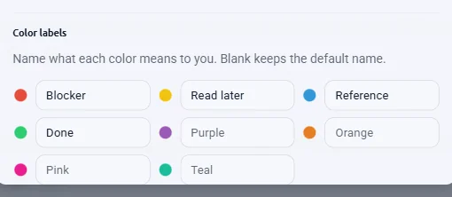
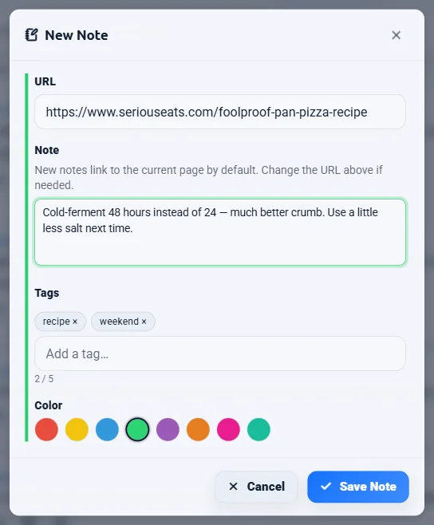
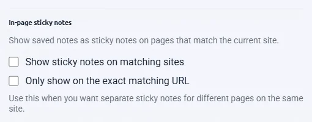
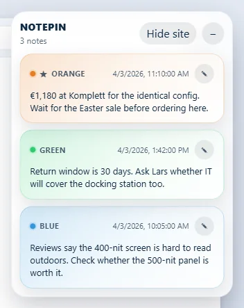
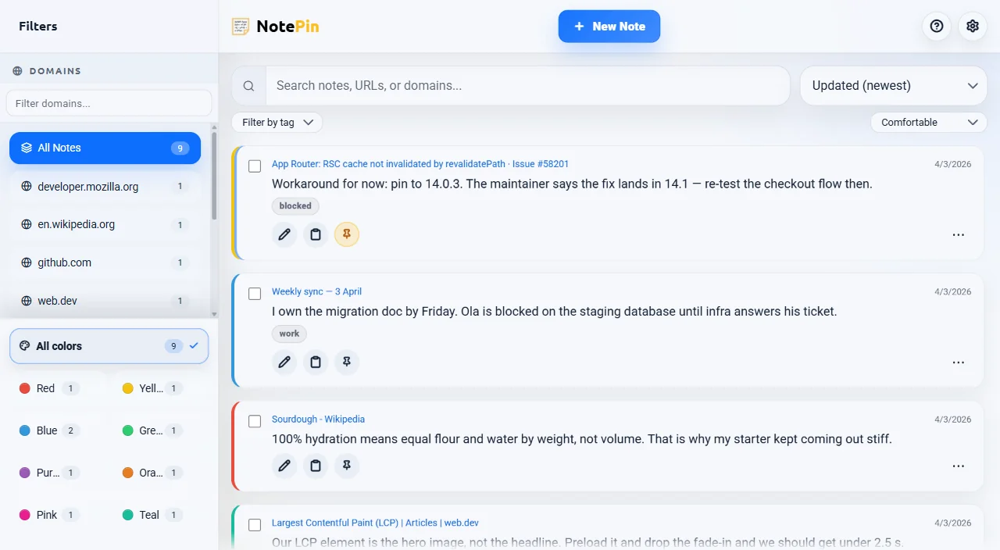
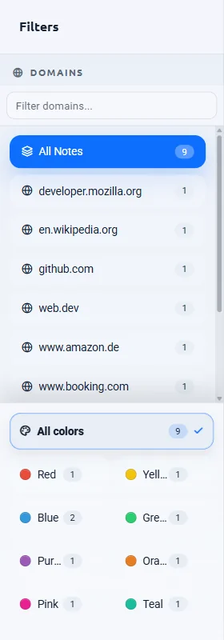
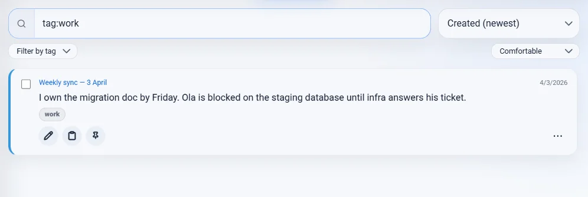
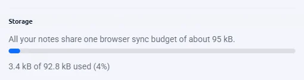
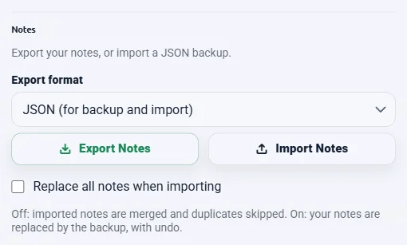

No matching section
Try a shorter term, a feature name such as “sticky”, or clear the search.
Start here
What NotePin does
NotePin saves a note against the web page you found something on, and brings it back when you return to that page.
A note is a piece of text with a web address attached. That address is what makes NotePin different from a plain notepad: notes group by site, the toolbar icon shows a count for the page you are on, and if you choose to, your notes for a site can appear directly on that site as floating sticky notes.
Typical uses:
- A workaround you found in a long GitHub issue, saved on that issue.
- A price and a return window on a product page, so next week you still have the numbers.
- A change you want to make to a recipe, waiting on the recipe.
- A quoted paragraph from an article, with the source link kept automatically.
This page is the reference. For longer walkthroughs of one feature at a time — capturing selected text, replacing bookmark folders, in-page stickies, keeping a commonplace book — see the guides.
Setup
Install and first run
- Install from the Chrome Web Store or Microsoft Edge Add-ons.
- A welcome page opens once, explaining the basics. You can close it and reopen it any time from the extension's details page.
- Pin the toolbar icon. Click the puzzle-piece icon in the browser toolbar, then the pin beside NotePin. Without this the icon hides in the overflow menu and the badge count is invisible.
- Open any web page and click the NotePin icon. The popup opens with an empty list and a Take a new note… button.
Quick start
Save your first note
Three ways, in order of how often you will use them.
From the popup
- Click the NotePin icon.
- Click Take a new note….
- Type. The page you are on is attached automatically.
- Pick a color, add tags if you want, then Save.
From selected text
- Select any text on a page.
- Right-click and choose Save to NotePin.
- NotePin opens with the quote already filled in.
- Edit if you like, then Save.
From a page or link
- Right-click anywhere with nothing selected.
- Choose Save this page to NotePin.
- On a link, choose Save this link to NotePin instead.
- Write the note and Save.
Capture
Every way to capture
| Method | Note text | Address attached |
|---|---|---|
| Popup → Take a new note… | Empty, you type it | The page you are on |
| Right-click on selected text | The selected text | The page you are on |
| Right-click on a page | Empty, you type it | The page you are on |
| Right-click on a link | Empty, you type it | The link's address |
| Keyboard command | The selected text, if any | The page you are on |
| Board → New Note | Empty, you type it | Whatever you type in the URL field |
Drafts are kept for you
If you start writing in the popup and the popup closes — you clicked the page, switched tabs, or the browser closed it — the text is kept. Open NotePin again and it is still there.
If you then capture something else with a right-click, the new capture is added underneath your unsaved draft rather than replacing it, and a short message confirms it. Nothing you typed is thrown away.
chrome://
and edge://, extension pages, and local file:// pages are not valid
web addresses for a note. You can still write the note; it is saved without an address and
appears under No Domain on the board.
The interface
The popup, screen by screen
The popup is the quick surface. It opens on the toolbar icon.

| Control | What it does |
|---|---|
| Take a new note… | Opens the note form. The current page is attached when you save. |
| Search box | Filters your notes as you type. See Search and filters. |
| This page / This site / All notes | Choose notes for the exact page, the current site, or your whole collection. Counts show the notes in each scope before text or tag filters; your choice is remembered. |
| Open side panel | Keeps NotePin beside your browsing instead of closing when you return to the page. |
| Settings (gear) | Opens the shared settings panel. See Settings reference. |
| Expand (arrows) | Opens the fullscreen board in a tab. An in-progress note comes with you. |
| Toolbar badge | The number of notes you have for the site you are on. |
Page and site matching
This page matches the saved URL, respecting your settings for removing query strings and hash fragments.
This site treats www, the main domain, and its subdomains as
one site. A note saved on www.example.com or app.example.com shows
when you are on example.com, and the other way round. Two different subdomains —
a.example.com and b.example.com — stay separate, and a lookalike
domain such as notexample.com never matches. The toolbar badge counts the same way.
Keep NotePin open in the side panel
Click Open side panel in the popup header. You can search and write notes without closing it when you return to a page. Choose Allow page following to let it read tab titles and URLs as you switch tabs; this permission is optional and Stop following pages revokes it. Without access, All notes and manual source URLs still work.
The Save this note to field shows the source URL. Once you start writing, that source stays attached even if you switch pages. You can edit it yourself. Popup and side-panel drafts are saved separately; opening the side panel does not move a popup draft.
Popup notes are always newest first
The popup list ignores the board's sort setting and always shows the most recent notes at the top, with pinned notes above everything. Change the sort on the board and the popup is unaffected.
Reference
What a note holds
| Field | Limit | Notes |
|---|---|---|
| Text | 2,000 characters | A counter appears once you pass 1,000. Line breaks are kept. |
| Web address | — | Only http and https addresses are stored. |
| Page title | 80 characters | Captured automatically. Shown as the card's link label. |
| Tags | 5 tags, 24 characters each | Optional. See Tags. |
| Color | One of 8 | See Colors. |
| Pinned | Yes or no | Pinned notes sort above everything else. |
| Created / last edited | — | Hover a timestamp to see the full date and time. |

Viewing a note
Click the note text on a card to open the note viewer in the popup or fullscreen board. The viewer keeps the note read-only by default, with Copy, Quick Edit, and Close along the bottom.
Any http:// or https:// web address written inside the note text
becomes a clickable link in the viewer. Clicking it opens that address in a new tab.
Why the page title matters
NotePin stores the title of the page you were on. On a note card the title is shown instead of the raw address, so a list of notes reads like a list of pages rather than a column of near-identical URLs. The full address is still there — hover the link to see it. Titles are also searchable.
A note whose address you typed by hand on the board has no page to take a title from, so it shows the address instead.
Dates
Notes from today show the time only. Older notes show the date only. Hovering either shows the complete date and time in your local format.
Organising
Colors and color labels
Eight colors: red, yellow, blue, green, purple, orange, pink, and teal.
A color is a stripe down the left edge of the note card, and it is a filter on the board. Colors cost nothing to use and nothing to store.
Name what a color means

Six weeks after you decide purple means "read later", you will not remember. Open Settings → Color labels and give each color your own name — "Blocker", "Buy", "Follow up". Those names then appear on the color swatches, in the board's color filters, in the bulk color picker, and on in-page sticky notes.
Organising
Tags
Up to five tags per note, 24 characters each. Use them when a project spans several sites.
- Open the note form in the popup or on the board.
- Type into the Tags field, choose a suggested existing tag, or enter a new one.
- Press Enter or comma to make a chip. Click its × to remove it. Save also adds any tag you are still typing.
- Use the pencil on an existing note to change its tags, or select several notes on the board and choose Tags to add or remove tags together.

Click any tag chip to add a separate tag filter without changing your search text.
You can also type tag:name in the search box.
On the page
In-page sticky notes
Your notes for a site, shown on that site, in a small floating panel.

Turning them on

- Open Settings from the popup or the board.
- Tick Show sticky notes on matching sites.
- Your browser asks for permission to read and change data on websites. This is what lets NotePin draw the panel on a page. Accept it to continue.
- The panel appears on any site where you already have notes, including tabs already open.
Using the panel

| Control | What it does |
|---|---|
| Drag the header | Snaps the panel to any of the four screen corners. Your choice is remembered per browser. |
| − / + | Collapses the panel to its header, or expands it again. Remembered per site. |
| Hide site | Hides the panel on this site for 24 hours. |
| Filter box | Appears once a site has five or more notes. Narrows the panel's list. |
| Pencil on a card | Opens a dedicated editor window for that note. |
Whole site or one exact page
By default the panel shows notes for the whole site, matched the same way as This site. Turn on Only show on the exact matching URL in Settings if you would rather each page show only its own notes — useful on sites where every page is a different topic.
The interface
The fullscreen board
The board is the full-window view: every note, with filters down the side.
Open it with the expand button in the popup header, or with a keyboard shortcut you assign.

| Area | Contents |
|---|---|
| Sidebar, top | Every domain you have notes on, with counts. A filter box narrows a long list. |
| Sidebar, bottom | Color filters. Pick several at once to combine them. |
| Toolbar | Search box and the sort selector. |
| Header | New Note, expand/collapse all, help and FAQ, settings. |
| List | Your notes, filtered and sorted by everything above. |

No Domain
Notes saved without a web address are grouped under No Domain, which appears directly under All Notes whenever such notes exist.
Sorting
Six orders, remembered between sessions:
- Created (newest) and Created (oldest)
- Updated (newest) and Updated (oldest)
- A–Z and Z–A
Pinned notes always sort above everything, whichever order you choose.
Narrow windows
Below about 992 pixels wide — including a normal window at high browser zoom — the sidebar becomes a drawer you open from the header, so the note list keeps the full width.
Finding things
Search and filters
What search looks at
Typing in the search box matches against all of:
- The note text
- The page title
- The full web address
- The domain
- The note's tags
Searching by tag

Type tag:work to show only notes carrying that exact tag. Alternatively, use
Filter by tag or click a tag on a note: a removable filter chip appears
beside the search controls, leaving your text search intact. Multiple tag filters require all selected tags.
Text search highlights matches in note text and page links, and shows a passage around a match deep inside a long note.
On the board, choose Comfortable or Compact beside the filters. NotePin remembers the layout; matching search passages remain readable in either layout.
Combining filters on the board
Domain, colors, tags, the sidebar's domain filter box, and search all apply at once. A note has to satisfy every active filter to appear.
Your domain, color, and search choices are remembered for the tab while it stays open. The board also clears a filter by itself if the last note matching it disappears, so you are never stuck looking at an empty board with no way back.
Working at scale
Bulk actions
Available on the board once you tick at least one note.

- Tick the checkbox on any note. The bulk toolbar appears.
- Use Select visible to tick everything currently on screen.
- Choose an action: apply a color, pin, unpin, export, delete, or clean duplicates.

Cleaning duplicates
Duplicates finds notes with the same text and the same address, keeps one of each, and removes the rest. It asks first and gives you an undo afterwards.
Change tags on selected notes
Select notes, click Tags, choose Add tags or Remove tags, and then Apply tags. Other tags stay intact. If adding would put any selected note over five tags, nothing changes and the dialog stays open so you can adjust the operation. Bulk tagging has no automatic undo.
Which actions can be undone
| Action | Confirms first | Undo |
|---|---|---|
| Delete one note | No | Yes, 5 seconds |
| Bulk delete | Yes | Yes, 5 seconds |
| Clear visible notes | Yes | Yes, 5 seconds |
| Clean duplicates | Yes | Yes, 5 seconds |
| Bulk color, tags, pin, unpin | No | No — reapply manually |
Day to day
Editing and deleting
Quick editing from the viewer
Open a note, then click Quick Edit. The note text changes into a compact textarea for small corrections. Click Save to store the change and return the viewer to read-only mode.
Quick Edit changes only the note text. Use the pencil on the note card when you need to edit the saved address, color, or tags.
Editing in place

Click the pencil on any note card. The card turns into an editor with the text, the address, tags, and a color picker. Ctrl + Enter saves, Esc cancels.
The dedicated editor window
Clicking the pencil on an in-page sticky note opens a separate small window for that note. Clicking the same sticky again brings that window back to the front rather than opening a second one. It asks before discarding unsaved changes.
Deleting
Open a card's More actions (…) menu to find View and Delete; Edit, Copy, and Pin stay visible. Deleting a single note happens immediately, with a 5-second Undo in the toast at the bottom. Bulk deletes and clearing the visible list ask first, then also offer undo.
Reference
Settings reference
One settings panel, opened from the gear icon in either the popup or the board. Changes apply immediately — there is no Save button.

| Setting | Options | What it affects |
|---|---|---|
| Appearance | Match system, Light, Dark | All NotePin screens. Applies at once and on next open. |
| Popup size | Small, Medium, Large | Popup width only (360, 420, or 480 pixels). Popup only. |
| Sort notes | Six orders | The board's list. The popup stays newest-first. |
| Show sticky notes on matching sites | On / off | Turns in-page stickies on. Asks for website access. |
| Only show on the exact matching URL | On / off | Stickies show per page instead of per site. |
| Remove query strings from saved URLs | On / off | Strips ?tracking=… from addresses you save from now on. |
| Remove hash fragments from saved URLs | On / off | Strips #section from addresses you save from now on. |
| Color labels | Eight text fields | Your own name for each color. Blank restores the default. |
| Storage | Read-only meter | How much of your sync space the notes use. See Storage limits. |
| Export format | JSON, Markdown, CSV | The format the Export button produces. Board only. |
| Replace all notes when importing | On / off | Import replaces instead of merging. Board only. |
Import, export, the sort selector, and the storage meter appear on the board. The popup size control appears in the popup. Everything else is on both.
Reference
Keyboard shortcuts
While writing or editing
| Keys | Action |
|---|---|
| Ctrl + Enter | Save the note |
| Esc | Cancel an inline edit, or close a dialog |
On the board
These work when you are not typing in a field and no dialog is open.
| Key | Action |
|---|---|
| / | Jump to the search box |
| n | New note |
| j / k | Move down / up through the notes |
| Enter | Open the marked note |
| x | Select or deselect the marked note |
| p | Pin or unpin the marked note |
| e | Expand or collapse all note text |
| Esc | Clear the current selection |
Browser-wide commands
Three commands can be given a key combination of your choice. None are assigned by default, so they never clash with something you already use.
- Open
chrome://extensions/shortcuts— on Edge,edge://extensions/shortcuts. - Find NotePin in the list.
- Click the pencil beside a command and press the keys you want.
| Command | What it does |
|---|---|
| Open the NotePin popup | Same as clicking the toolbar icon |
| Open the NotePin board | Opens the board, reusing the tab if one is open |
| Save the selected text to NotePin | Captures the current selection without the right-click menu |
Your data
Sync across devices
NotePin uses your browser's own sync. There is no NotePin account.
Sign in to Chrome or Edge with the same profile on another computer, install NotePin, and your notes arrive. Nothing passes through a NotePin server, because there isn't one.
- Sign in with the same browser profile on each device.
- Make sure extension syncing is enabled in your browser's sync settings.
- Install NotePin on both.
Editing in two places at once
If the same note changes in two windows, NotePin notices and reloads the newer version rather than letting one overwrite the other. If it ever receives an incomplete set of notes from the browser — which can happen mid-sync — it shows a warning and refuses to save until the picture is complete again, rather than writing a half-copy over your notes.
Each new snapshot carries an exact byte count and checksum. That lets NotePin reject a list assembled from missing or mismatched pieces even if it still looks like valid data. It also keeps one verified last-good copy on this computer, so the safe fallback survives the browser restarting the extension. The fallback is never uploaded automatically while sync is uncertain.
Your data
Storage limits
Browser sync gives an extension about 100 kB in total. NotePin stops at 95 kB to stay clear of the edge.
That is the budget for all your notes together, not per note. Roughly speaking, at typical note lengths that is somewhere around 250 to 300 notes. Longer notes, page titles, tags, and the small integrity record each take a share.
The storage meter

Settings → Storage shows a bar with how much you have used. It turns amber at 80% and a warning appears, so you get notice well before anything fails.
What uses space
| Part | Rough cost |
|---|---|
| The note text | 1 byte per character, more for emoji and accents |
| The web address | 1 byte per character |
| The page title | Up to about 80 bytes |
| Each tag | About 16 bytes |
| Color, pinned, dates | Around 90 bytes together |
Your data
Export, import, and backup
Everything is on the board, under Settings → Notes.
Export

Choose a format, then click Export Notes.
| Format | Best for | Can be imported back |
|---|---|---|
| JSON | Backups and moving between browsers | Yes |
| Markdown | Obsidian, Notion, any notes app | No |
| CSV | Excel, Google Sheets | No |
Files are named with the date and time, for example
notes-20260813-142530.json. You can also export just the notes you have selected,
using Export in the bulk toolbar.
Import
Two modes, chosen by the tick box beside the buttons:
| Mode | Behaviour |
|---|---|
| Merge (default) | Adds notes from the file. Any note already present is skipped, so importing twice is safe. |
| Replace all notes when importing | Your current notes are replaced by the file's. Offers undo afterwards. |
A sensible backup habit
- Export a JSON backup before a big clean-up or a bulk delete.
- Export before switching browsers or reinstalling.
- If you keep a lot of notes, export occasionally and keep the file somewhere safe.
Your data
Privacy and permissions
Your notes stay in your browser. There is no NotePin server, no account, and no analytics inside the extension.
| Permission | Why |
|---|---|
storage | To save and sync your notes, and to keep local preferences such as popup size. |
activeTab | To read the address of the tab you are on, for the badge count and to attach to new notes. |
contextMenus | To add the right-click entries. |
scripting | To add or remove the in-page sticky note script when you turn that feature on or off. |
sidePanel | To display NotePin in the browser side panel. |
tabs (optional) | Requested only by Allow page following, to read active tab titles and URLs. The browser calls this browsing-history access, but NotePin does not record a history log. Stop following pages revokes it. |
| Website access (optional) | Requested only if you enable in-page sticky notes. Never at install. |
Cleaner saved links
Two settings strip tracking parameters and section anchors from addresses as you save them. They apply to new saves and edits only, never retroactively to notes you already have.
Links that leave NotePin
Two optional links open a third-party page, and only if you choose to follow them: uninstalling opens a Google Forms feedback page, and the one-time rating prompt links to the Chrome Web Store or Edge Add-ons listing. Your notes are never attached to either.
The full policy is on the Privacy page.
Reference
Languages
NotePin follows your browser's language automatically. There is no language setting — change your browser's display language and NotePin follows.
- English
- Spanish (Español)
- Portuguese, Brazil (Português do Brasil)
- French (Français)
- German (Deutsch)
- Japanese (日本語)
- Norwegian Bokmål (Norsk bokmål)
Any other browser language falls back to English.
Reference
Accessibility
- Every control is reachable and operable from the keyboard, with a clearly visible focus ring.
- Note text is exposed to screen readers as text, and the actions on each card have their own labels.
- Status messages and the undo toast are announced to assistive technology.
- Dialogs keep focus inside themselves and return it where it came from when they close.
- If your system asks for reduced motion, NotePin turns off its animations and transitions.
- Color is never the only signal — pinned state, selection, and color all have a second cue.
Help
Troubleshooting
The badge shows a number but the popup looks empty
A text or tag filter may be hiding matching notes, or This page may be narrower than the site-wide badge count. Clear those filters and choose This site. The badge counts notes for the current site specifically.
Sticky notes are not showing on a site
- Check the feature is on: Settings → Show sticky notes on matching sites.
- Check you actually have notes for that site — the toolbar badge tells you.
- You may have used Hide site, which hides the panel there for 24 hours.
- If Only show on the exact matching URL is on, notes only appear on the exact page they were saved on.
- If you refused the website-access prompt, turn the setting off and on again to be asked once more.
- Sticky notes cannot appear on browser pages, extension pages, or the Chrome Web Store.
A note will not save, and I see a storage message
You have reached the browser's sync limit. Export a JSON backup first, then delete or shorten notes, or run Duplicates on the board. See Storage limits.
NotePin says it cannot reach its background service
The browser puts extensions to sleep to save memory and occasionally is slow to wake one. Close and reopen the popup. You are seeing your most recent notes from cache in the meantime, and nothing is lost. If it persists, disable and re-enable NotePin on the extensions page.
A warning says the note list looks incomplete
The browser returned a partial set of notes, usually while sync is catching up. NotePin deliberately blocks saving in this state so a partial copy cannot overwrite your notes. It shows the last checksum-verified copy available on this computer. Wait a moment and reopen NotePin; the fallback is read-only and is never pushed into sync automatically.
A warning says the notes use a newer storage version
Another computer has upgraded the shared note data with a newer NotePin release. Update NotePin in this browser before editing. The extension remembers the newer format on this computer and stays read-only until you update.
My notes have not arrived on my other computer
- Confirm both browsers are signed in to the same profile.
- Confirm extension syncing is enabled in the browser's own sync settings.
- Sync is not instant — give it a few minutes.
- As a fallback, export JSON on one device and import it on the other.
I deleted a note by mistake and the undo is gone
Undo lasts 5 seconds and there is no history beyond it. If you have a JSON backup, import it in merge mode — the deleted note comes back and everything else is left alone.
The note was saved but has no link
The page was not a normal web address — a browser settings page, an extension page, or a local file. Notes like these are kept under No Domain on the board. You can add an address yourself by editing the note.
My keyboard shortcut does nothing
Shortcuts are not assigned by default. Open
chrome://extensions/shortcuts (or edge://extensions/shortcuts)
and set one. If the combination you chose is already used by the browser or the website,
it will not reach NotePin — pick another.
Reference
Quick reference
| Item | Value |
|---|---|
| Note text | 2,000 characters |
| Character counter appears | Past 1,000 characters |
| Page title stored | Up to 80 characters |
| Tags per note | 5, up to 24 characters each |
| Colors | 8 |
| Sort orders | 6 |
| Total sync storage | About 95 kB for all notes |
| Storage warning | At 80% used |
| Undo window | 5 seconds |
| Hide site duration | 24 hours |
| Sticky filter box appears | At 5 or more notes on the site |
| Popup widths | 360 / 420 / 480 pixels |
| Board drawer breakpoint | Below about 992 pixels |
| Languages | 7 |
Help
Support
If something here did not answer your question, or you have found a bug, get in touch. Telling us your browser, the NotePin version from the extensions page, and what you were doing makes a report far easier to act on.
There is also a short FAQ inside NotePin itself — the question-mark icon in the board header.